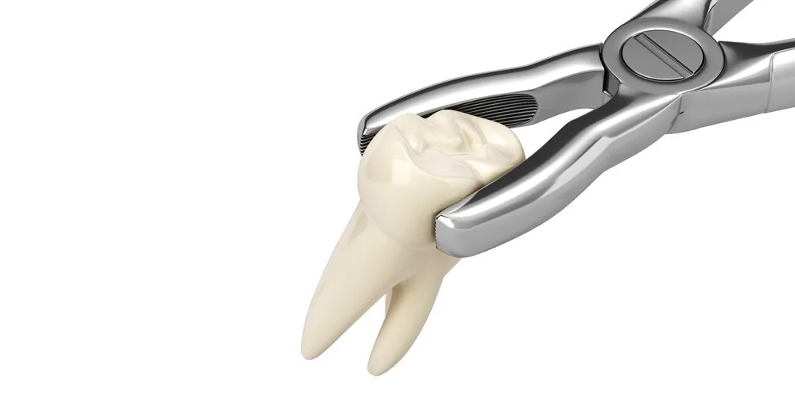
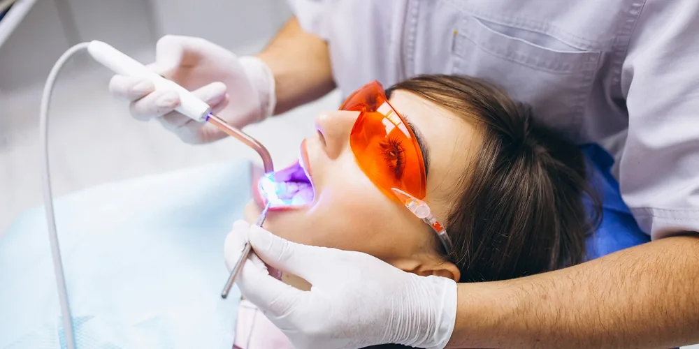

Oralna kirurgija
Oralnokirurški posegi, zdiranje zob, apikotomije.
Naročite se na pregled →
Oralna in zobna kirurgija v Zobozdravstvenem centru Diamantu.
#4 strokovnost, sodobna tehnologija in celostna oskrba na lokacijah Ljubljana in Celje
Izvajanje oralne kirurgije je ključni del sodobnega zobozdravstva, saj zajema širok nabor posegov, povezanih s funkcijo in zdravjem zob, dlesni ter čeljustne kosti. V Zobozdravstvenem centru Diamant skrbimo za to, da so vsi posegi izvedeni natančno, varno in z minimalnim nelagodjem za pacienta. Naš zobni kirurg oziroma kirurški tim deluje na lokacijah v Ljubljani in Celju, kjer imamo sodobno opremo, lasten rentgen (ortopan in CBCT), digitalno diagnostiko ter postopek zdravljenja, ki poteka brez napotnice in brez čakalnih dob.
Večina posegov je na voljo takoj, zlasti če gre za bolečine ali akutna stanja. Paciente sprejmemo nemudoma, saj vemo, da so težave, povezane z zobobolom, vnetji in oteklinami, izjemno neprijetne in zahtevajo takojšnjo obravnavo.
Ekstrakcije – od enostavnih do kompleksnih
Vsak dan izvedemo veliko število ekstrakcij zob, tako enostavnih kot zelo zahtevnih. Kirurški poseg poteka pod popolno lokalno anestezijo, uporabljamo pa sodobne kirurške instrumente, ki omogočajo natančno, hitro in manj travmatično odstranitev zoba.
Vrste puljenj, ki jih izvajamo:
Enostavna ekstrakcija: primerna za zob, ki je že zrahljan, močno poškodovan ali brez zapletov v korenini.
Komplicirana ekstrakcija s šivanjem: kadar je potrebno dodatno razširiti dostop ali zapreti rano s šivom.
Kirurška ekstrakcija: pri zobeh, ki so delno ali v celoti ujeti pod dlesnijo, ali kadar je anatomija zahtevna, kar je pogosto v primeru modrostnih zob.
Posebno pozornost posvečamo neizraslim podočnikom, ki so ene izmed najpogostejših težav v mladosti. Nepravilno izraščen podočnik lahko povzroči številne težave, kot so prerivanje zob, poškodbe korenin in dolgotrajne ortodontske zaplete. Pri nas izvajamo postopke oralne kirurgije za sproščanje in repozicioniranje podočnikov v sodelovanju z ortodonti, kar omogoča varno vrnitev zoba v pravilen položaj in lahko prepreči številne težave.
Za večino posegov nimamo čakalne dobe. V primeru bolečin, vas vzamemo takoj.
V našem centru opravljamo tudi samoplačniške:
- enostavne ekstrakcije – puljenje zob (60 EUR, pri puljenju več zob hkrati je cena nižja)
- komplicirane ekstrakcije s šivanjem (90 EUR)
- kirurške ekstrakcije zob (150 EUR)
- operacijske izklese modrostnih zob – osmic (270 EUR)
- apikotomije z MTA retrogradno polnitvijo (250 EUR)
- Cistektomija (50-250 EUR)
- vstavitve implantatov (750 – 1000 EUR)
dvig sinusnega dna (sinus lift) pred vstavitvijo implantata (150-800 EUR).
Puljenje modrostnih zob varno, natančno in nežno
Modrostni zobje sodijo med najpogostejše vzroke za kirurški poseg v ustni votlini. V primerih, ko se ne izrastejo pravilno, lahko povzročijo bolečine, vnetje, pritisk na sosednje zobe in čeljust ali celo ciste. Včasih sta nujna kirurški poseg v ustni votlini in kirurško puljenje, zato izvajamo:
operacijske izklese modrostnih zob,
zdravljenje zapletov, kot so perikoronitis, delno izrasli zobje ali poškodbe okoliških tkiv.
Postopek je izveden z natančno pripravo, lokalno anestezijo, po potrebi tudi z dodatnimi tehnikami za zmanjšanje nelagodja po posegu. Po posegu pacienta seznanimo z jasnimi navodili za okrevanje, ki bistveno zmanjšajo tveganje za bolečine, otekanje, zobozdravstvene zaplete ali vnetja. Ob upoštevanju nasvetov si pacient hitro povrne zdravje in dobro počutje.
Vsi posegi so samoplačniški, ne potrebujete napotnice in ne morete uveljavljati povračila stroškov od ZZZS v nobenem primeru.
Če imate sliko zob, pa jo prosim prinesite zraven, sicer pa lahko rentgensko slikanje opravimo pri nas. Priporočamo, da si vnaprej preberete še navodila za čas pred in po posegu.
Vstavitev zobnih vsadkov – trajna rešitev za izgubljene zobe
Tako v Celju kot v Ljubljani lahko poskrbimo za vstavitev zobnih vsadkov po strogo načrtovanem protokolu. Cena zobozdravstvenih storitev vstavitve implantata je odvisna od materiala in kompleksnosti primera.
Pred vstavitvijo implantata izvedemo CBCT 3D slikanje, ki omogoča natančno oceno kostnine in postavitev implantata v optimalni položaj. Zagotovimo tudi celostno pripravo, vključno z načrtovanjem protetičnega dela in umestitve v čeljust, da je končni rezultat funkcionalen in estetsko dovršen.
Kadar je kostnine premalo, izvedemo dvig sinusnega dna (sinus lift), ki omogoča ustvarjanje dodatnega prostora za implantat. Gre za poseg, ki ga izvajamo rutinsko, z izjemno natančnostjo in preverjenimi tehnikami, da je bolečina minimalna.
Zobna kirurgija in diagnostika na enem mestu
Na obeh lokacijah imamo tako ortopan kot CBCT, kar pomeni, da pacient ne izgublja časa z napotovanjem na druge ustanove in vse storitve dobi pri nas. Diagnostiko opravimo takoj, rezultate pa vidite v nekaj minutah. Tako je zdravljenje hitrejše, preglednejše in bolj predvidljivo.
Moderni prostori in dostopnost
Ordinacije v Ljubljani (v pritličju Austria Trend Hotela) in Celju (PSO Diamant nasproti Celjskega sejma in Tehnične trgovine Inpos) so sodobno opremljene, prijetne in zasnovane tako, da se pacienti počutijo varno in sproščeno.
Obe lokaciji imata:
- brezplačno parkirišče,
- lahko dostopnost z avtom ali avtobusom,
- vrhunsko opremo za kirurške posege,
izkušen kirurški tim, ki je specializiran za kompleksne primere.
Pri nas se lahko naročite brez napotnice, vsi posegi pa so samoplačniški, kar omogoča takojšnjo izvedbo in popolno časovno fleksibilnost.
Imamo izkušnje, lahko vam pomagamo.
Za informativno ponudbo se naročite na neobvezujoč pregled.
Naročite se na pregled →Podobne storitve
Vse storitve →
Konzervativno in estetsko zobozdravstvo
Širok razpon preventivnega in estetskega zobozdravstva s poudarkom na estetiki.

Implantati
Manjkajoče zobe nadomestimo z zobnimi vsadki, implantati.

All-on-4
Če ste ali boste v kratkem izgubili vse zobe, vam jih metoda All-on-4 povrne v enem dnevu.

Beljenje zob
Sedaj si lahko posvetlite zobe že s samo enim obiskom v naši ordinaciji.